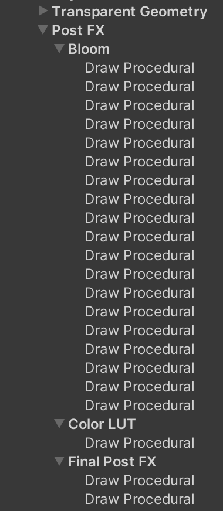
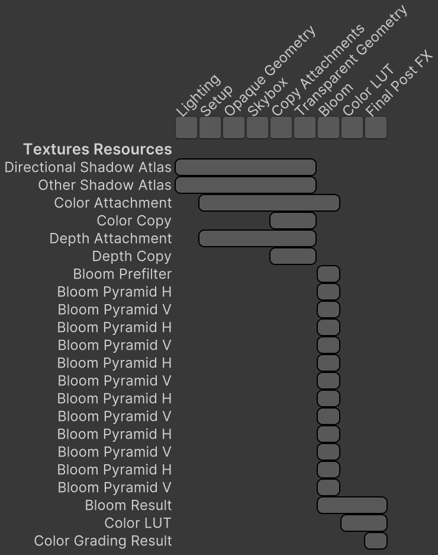

Custom SRP 2.4.0
Post FX Passes and Textures
- Let the render graph manage post FX textures.
- Split post FX into multiple passes.
This tutorial is made with Unity 2022.3.16f1 and follows Custom SRP 2.3.0.
Small Changes
This time we will complete the transition to the Render Graph API, letting it manage all render textures. But first we make a few smaller changes.
We're going to explicitly mark all anonymous methods of our render passes as static. This isn't required but prevents mistakes that could cause the enclosing scope to be captured, leading to unwanted memory allocations. This is done by writing A boolean variable is used in Then use We're going to simplify Then keep track of whether the camera has active post FX in Then use Explicit Static Lambdas
static in front of the lambda functions. We do this for all invocations of SetRenderFunct. I only show it for SetupPass.Record. builder.SetRenderFunc<SetupPass>(
static (pass, context) => pass.Render(context));
Allow HDR
CameraRenderer.Render to keep track of whether HDR rendering is used, which is determined by both the buffer settings and the camera. Because the buffer settings are a copied struct we can merge the camera settings into it, just like we do with the enabled state of FXAA.
//bool useHDR = bufferSettings.allowHDR && camera.allowHDR;
bufferSettings.allowHDR &= camera.allowHDR;bufferSettings.allowHDR further down instead of useHDR.Checking Whether Post FX are Active
PostFXStack and the first step for that is moving the decision whether post FX are active for a camera to PostFXSettings. Give it a static AreApplicableTo method that checks the camera type and if necessary the scene view state.using System;
using UnityEditor;
using UnityEngine;
[CreateAssetMenu(menuName = "Rendering/Custom Post FX Settings")]
public class PostFXSettings : ScriptableObject
{
…
public static bool AreApplicableTo(Camera camera)
{
#if UNITY_EDITOR
if (camera.cameraType == CameraType.SceneView€ &&
!SceneView.currentDrawingSceneView.sceneViewState.showImageEffects)
{
return false;
}
#endif
return camera.cameraType <= CameraType.SceneView€;
}
}
CameraRenderer.Render via a boolean hasActivePostFX variable. if (cameraSettings.overridePostFX)
{
postFXSettings = cameraSettings.postFXSettings;
}
bool hasActivePostFX =
postFXSettings != null && PostFXSettings.AreApplicableTo(camera);
hasActivePostFX instead of checking postFXStack.IsActive further down.
Refactoring Post FX
The post FX stack is the last part of our render pipeline that still manages its own temporary render textures. It consists of multiple parts, which we're going to split into separate passes. We keep the current PostFXPass, applying color grading, FXAA, and performing the final rescale if needed. The other work will be moved to two new passes.
Gutting the Stack
We want to separate and isolate code as much as possible, but our current approach relies on a single post FX material and a bunch of settings are used by all FX. We're not going to change that at this time, so we keep PostFXStack but will drastically simplify it. Only the generic drawing code will remain in it, along with the shared settings, everything made public.
Rather than show all individual changes I simply present the remade class, only omitting the passes, which are still the same. The shared settings are the buffer settings, buffer size, camera, final blend mode, and the post FX settings, all declared as properties. I also included a convenient Draw variant without a from parameter.
The old code will mostly migrate to the passes. I kept it in a temporary file during the process of refactoring.
using UnityEngine;
using UnityEngine.Rendering;
public class PostFXStack
{
public enum Pass
{ … }
public static readonly int
fxSourceId = Shader.PropertyToID("_PostFXSource"),
fxSource2Id = Shader.PropertyToID("_PostFXSource2"),
finalSrcBlendId = Shader.PropertyToID("_FinalSrcBlend"),
finalDstBlendId = Shader.PropertyToID("_FinalDstBlend");
static readonly Rect fullViewRect = new(0f, 0f, 1f, 1f);
public CameraBufferSettings BufferSettings
{ get; set; }
public Vector2Int BufferSize
{ get; set; }
public Camera Camera€
{ get; set; }
public CameraSettings.FinalBlendMode FinalBlendMode€
{ get; set; }
public PostFXSettings Settings
{ get; set; }
public void Draw(CommandBuffer buffer, RenderTargetIdentifier to, Pass pass)
{
buffer.SetRenderTarget(
to, RenderBufferLoadAction.DontCare, RenderBufferStoreAction.Store);
buffer.DrawProcedural(Matrix4x4.identity, Settings.Material, (int)pass,
MeshTopology.Triangles, 3);
}
public void Draw(
CommandBuffer buffer,
RenderTargetIdentifier from,
RenderTargetIdentifier to,
Pass pass)
{
buffer.SetGlobalTexture(fxSourceId, from);
buffer.SetRenderTarget(
to, RenderBufferLoadAction.DontCare, RenderBufferStoreAction.Store);
buffer.DrawProcedural(Matrix4x4.identity, Settings.Material, (int)pass,
MeshTopology.Triangles, 3);
}
public void DrawFinal(
CommandBuffer buffer,
RenderTargetIdentifier from,
Pass pass)
{
buffer.SetGlobalFloat(finalSrcBlendId, (float)FinalBlendMode€.source);
buffer.SetGlobalFloat(
finalDstBlendId, (float)FinalBlendMode€.destination);
buffer.SetGlobalTexture(fxSourceId, from);
buffer.SetRenderTarget(
BuiltinRenderTextureType.CameraTarget,
FinalBlendMode.destination == BlendMode.Zero &&
Camera€.rect == fullViewRect ?
RenderBufferLoadAction.DontCare : RenderBufferLoadAction.Load,
RenderBufferStoreAction.Store);
buffer.SetViewport(Camera€.pixelRect);
buffer.DrawProcedural(Matrix4x4.identity, Settings.Material, (int)pass,
MeshTopology.Triangles, 3);
}
}
Also remove the partial class in PostFXStack.Editor.cs as it is no longer needed.
Color LUT Pass
All code related to drawing the LUT texture for color grading goes to a new ColorLUTPass class. It's mostly a straight copy and paste action with a little restructuring to make it fit the render graph pass format. From now on I'll only mark code that warrants special attention because it significantly deviates from the copied code. The only significant change here is that the color LUT is now accessed via a TextureHandle, which the Record method returns.
using UnityEngine;
using UnityEngine.Experimental.Rendering;
using UnityEngine.Experimental.Rendering.RenderGraphModule;
using UnityEngine.Rendering;
using static PostFXSettings;
using static PostFXStack;
public class ColorLUTPass
{
static readonly ProfilingSampler sampler = new("Color LUT");
static readonly int
colorGradingLUTId = Shader.PropertyToID("_ColorGradingLUT"),
…
smhRangeId = Shader.PropertyToID("_SMHRange");
static readonly GraphicsFormat colorFormat =
SystemInfo.GetGraphicsFormat(DefaultFormat.HDR);
PostFXStack stack;
int colorLUTResolution;
TextureHandle colorLUT;
void ConfigureColorAdjustments(
CommandBuffer buffer, PostFXSettings settings)
{ … }
void ConfigureWhiteBalance(CommandBuffer buffer, PostFXSettings settings)
{ … }
void ConfigureSplitToning(CommandBuffer buffer, PostFXSettings settings)
{ … }
void ConfigureChannelMixer(CommandBuffer buffer, PostFXSettings settings)
{ … }
void ConfigureShadowsMidtonesHighlights(
CommandBuffer buffer, PostFXSettings settings)
{ … }
void Render(RenderGraphContext context)
{
PostFXSettings settings = stack.Settings;
CommandBuffer buffer = context.cmd;
ConfigureColorAdjustments(buffer, settings);
ConfigureWhiteBalance(buffer, settings);
ConfigureSplitToning(buffer, settings);
ConfigureChannelMixer(buffer, settings);
ConfigureShadowsMidtonesHighlights(buffer, settings);
int lutHeight = colorLUTResolution;
int lutWidth = lutHeight * lutHeight;
buffer.SetGlobalVector(colorGradingLUTParametersId, new Vector4(
lutHeight,
0.5f / lutWidth, 0.5f / lutHeight,
lutHeight / (lutHeight - 1f)));
ToneMappingSettings.Mode mode = settings.ToneMapping.mode;
Pass pass = Pass.ColorGradingNone + (int)mode;
buffer.SetGlobalFloat(colorGradingLUTInLogId,
stack.BufferSettings.allowHDR && pass != Pass.ColorGradingNone ?
1f : 0f);
stack.Draw(buffer, colorLUT, pass);
buffer.SetGlobalVector(colorGradingLUTParametersId,
new Vector4(1f / lutWidth, 1f / lutHeight, lutHeight - 1f));
buffer.SetGlobalTexture(colorGradingLUTId, colorLUT);
}
public static TextureHandle Record(
RenderGraph renderGraph,
PostFXStack stack,
int colorLUTResolution)
{
using RenderGraphBuilder builder = renderGraph.AddRenderPass(
sampler.name, out ColorLUTPass pass, sampler);
pass.stack = stack;
pass.colorLUTResolution = colorLUTResolution;
int lutHeight = colorLUTResolution;
int lutWidth = lutHeight * lutHeight;
var desc = new TextureDesc(lutWidth, lutHeight)
{
colorFormat = colorFormat,
name = "Color LUT"
};
pass.colorLUT = builder.WriteTexture(renderGraph.CreateTexture(desc));
builder.SetRenderFunc<ColorLUTPass>(
static (pass, context) => pass.Render(context));
return pass.colorLUT;
}
}
Bloom Pass
Next up is BloomPass, which is the most complex because it uses a lot of render textures. A significant change for bloom is that we have to declare the textures in Record, separate from their usage in Render. So we have to loop through the texture pyramid twice, but can remember the step count the first time so the second loop is simpler. Also, we no longer have to explicitly release the textures.
We store the texture handles of the pyramid in an array, with the prefilter texture as its base. Then we replace the old sequential texture IDs with array indices. In this case Record returns a handle for the bloom result, or the original color attachment if the effect is skipped.
I also merger the width and height variables into a single Vector2Int variable for simplicity. It's now only used in Record.
using UnityEngine;
using UnityEngine.Experimental.Rendering;
using UnityEngine.Experimental.Rendering.RenderGraphModule;
using UnityEngine.Rendering;
using static PostFXStack;
public class BloomPass
{
const int maxBloomPyramidLevels = 16;
static readonly int
bicubicUpsamplingId =
Shader.PropertyToID("_BloomBicubicUpsampling"),
intensityId = Shader.PropertyToID("_BloomIntensity"),
thresholdId = Shader.PropertyToID("_BloomThreshold");
static readonly ProfilingSampler sampler = new("Bloom");
readonly TextureHandle[] pyramid =
new TextureHandle[2 * maxBloomPyramidLevels + 1];
TextureHandle colorSource, bloomResult;
PostFXStack stack;
int stepCount;
void Render(RenderGraphContext context)
{
CommandBuffer buffer = context.cmd;
PostFXSettings.BloomSettings bloom = stack.Settings.Bloom;
Vector4 threshold;
threshold.x = Mathf.GammaToLinearSpace(bloom.threshold);
threshold.y = threshold.x * bloom.thresholdKnee;
threshold.z = 2f * threshold.y;
threshold.w = 0.25f / (threshold.y + 0.00001f);
threshold.y -= threshold.x;
buffer.SetGlobalVector(thresholdId, threshold);
stack.Draw(buffer, colorSource, pyramid[0], bloom.fadeFireflies ?
Pass.BloomPrefilterFireflies : Pass.BloomPrefilter);
int fromId = 0, toId = 2;
int i;
for (i = 0; i < stepCount; i++)
{
int midId = toId - 1;
stack.Draw(buffer, pyramid[fromId], pyramid[midId],
Pass.BloomHorizontal);
stack.Draw(buffer, pyramid[midId], pyramid[toId],
Pass.BloomVertical);
fromId = toId;
toId += 2;
}
buffer.SetGlobalFloat(
bicubicUpsamplingId, bloom.bicubicUpsampling ? 1f : 0f);
Pass combinePass, finalPass;
float finalIntensity;
if (bloom.mode == PostFXSettings.BloomSettings.Mode.Additive)
{
combinePass = finalPass = Pass.BloomAdd;
buffer.SetGlobalFloat(intensityId, 1f);
finalIntensity = bloom.intensity;
}
else
{
combinePass = Pass.BloomScatter;
finalPass = Pass.BloomScatterFinal;
buffer.SetGlobalFloat(intensityId, bloom.scatter);
finalIntensity = Mathf.Min(bloom.intensity, 1f);
}
if (i > 1)
{
toId -= 5;
for (i -= 1; i > 0; i--)
{
buffer.SetGlobalTexture(fxSource2Id, pyramid[toId + 1]);
stack.Draw(buffer, pyramid[fromId], pyramid[toId], combinePass);
fromId = toId;
toId -= 2;
}
}
buffer.SetGlobalFloat(intensityId, finalIntensity);
buffer.SetGlobalTexture(fxSource2Id, colorSource);
stack.Draw(buffer, pyramid[fromId], bloomResult, finalPass);
}
public static TextureHandle Record(
RenderGraph renderGraph,
PostFXStack stack,
in CameraRendererTextures textures)
{
PostFXSettings.BloomSettings bloom = stack.Settings.Bloom;
Vector2Int size = (bloom.ignoreRenderScale ?
new Vector2Int(stack.Camera.pixelWidth, stack.Camera.pixelHeight) :
stack.BufferSize) / 2;
if (bloom.maxIterations == 0 ||
bloom.intensity <= 0f ||
size.y < bloom.downscaleLimit * 2 ||
size.x < bloom.downscaleLimit * 2)
{
return textures.colorAttachment;
}
using RenderGraphBuilder builder = renderGraph.AddRenderPass(
sampler.name, out BloomPass pass, sampler);
pass.stack = stack;
pass.colorSource = builder.ReadTexture(textures.colorAttachment);
var desc = new TextureDesc(size.x, size.y)
{
colorFormat = SystemInfo.GetGraphicsFormat(
stack.BufferSettings.allowHDR ?
DefaultFormat.HDR : DefaultFormat.LDR),
name = "Bloom Prefilter"
};
TextureHandle[] pyramid = pass.pyramid;
pyramid[0] = builder.CreateTransientTexture(desc);
size /= 2;
int pyramidIndex = 1;
int i;
for (i = 0; i < bloom.maxIterations; i++, pyramidIndex += 2)
{
if (size.y < bloom.downscaleLimit || size.x < bloom.downscaleLimit)
{
break;
}
desc.width = size.x;
desc.height = size.y;
desc.name = "Bloom Pyramid H";
pyramid[pyramidIndex] = builder.CreateTransientTexture(desc);
desc.name = "Bloom Pyramid V";
pyramid[pyramidIndex + 1] = builder.CreateTransientTexture(desc);
size /= 2;
}
pass.stepCount = i;
desc.width = stack.BufferSize.x;
desc.height = stack.BufferSize.y;
desc.name = "Bloom Result";
pass.bloomResult = builder.WriteTexture(
renderGraph.CreateTexture(desc));
builder.SetRenderFunc<BloomPass>(
static (pass, context) => pass.Render(context));
return pass.bloomResult;
}
}
Post FX Pass
PostFXPass becomes more complex because from now on it will take care of apply color grading, FXAA, and performing the final rescale if needed. We simplify those steps a bit by introducing a ScaleMode enum with three states, either none, linear, or bicubic, selecting which to use in Record. That allows us to flatten the logic in Render a bit.
We also record the bloom and color LUT passes here, hiding the fact that we split up the stack from the code in CameraRenderer. The pass itself them consists of the final post FX phase. We group all three passes in a single post FX scope to make profiling easier.
using UnityEngine;
using UnityEngine.Experimental.Rendering;
using UnityEngine.Experimental.Rendering.RenderGraphModule;
using UnityEngine.Rendering;
using static PostFXStack;
public class PostFXPass
{
static readonly ProfilingSampler
groupSampler = new("Post FX"),
finalSampler = new("Final Post FX");
static readonly int
copyBicubicId = Shader.PropertyToID("_CopyBicubic"),
fxaaConfigId = Shader.PropertyToID("_FXAAConfig");
static readonly GlobalKeyword
fxaaLowKeyword = GlobalKeyword.Create("FXAA_QUALITY_LOW"),
fxaaMediumKeyword = GlobalKeyword.Create("FXAA_QUALITY_MEDIUM");
static readonly GraphicsFormat colorFormat =
SystemInfo.GetGraphicsFormat(DefaultFormat.LDR);
PostFXStack stack;
bool keepAlpha;
enum ScaleMode { None, Linear, Bicubic }
ScaleMode scaleMode;
TextureHandle colorSource, colorGradingResult, scaledResult;
void ConfigureFXAA(CommandBuffer buffer)
{ … }
void Render(RenderGraphContext context)
{
CommandBuffer buffer = context.cmd;
buffer.SetGlobalFloat(finalSrcBlendId, 1f);
buffer.SetGlobalFloat(finalDstBlendId, 0f);
RenderTargetIdentifier finalSource;
Pass finalPass;
if (stack.BufferSettings.fxaa.enabled)
{
finalSource = colorGradingResult;
finalPass = keepAlpha ? Pass.FXAA : Pass.FXAAWithLuma;
ConfigureFXAA(buffer);
stack.Draw(buffer, colorSource, finalSource, keepAlpha ?
Pass.ApplyColorGrading : Pass.ApplyColorGradingWithLuma);
}
else
{
finalSource = colorSource;
finalPass = Pass.ApplyColorGrading;
}
if (scaleMode == ScaleMode.None)
{
stack.DrawFinal(buffer, finalSource, finalPass);
}
else
{
stack.Draw(buffer, finalSource, scaledResult, finalPass);
buffer.SetGlobalFloat(copyBicubicId,
scaleMode == ScaleMode.Bicubic ? 1f : 0f);
stack.DrawFinal(buffer, scaledResult, Pass.FinalRescale);
}
context.renderContext.ExecuteCommandBuffer(buffer);
buffer.Clear();
}
public static void Record(
RenderGraph renderGraph,
PostFXStack stack,
int colorLUTResolution,
bool keepAlpha,
in CameraRendererTextures textures)
{
using var _ = new RenderGraphProfilingScope(renderGraph, groupSampler);
TextureHandle colorSource = BloomPass.Record(
renderGraph, stack, textures);
TextureHandle colorLUT = ColorLUTPass.Record(
renderGraph, stack, colorLUTResolution);
using RenderGraphBuilder builder = renderGraph.AddRenderPass(
finalSampler.name, out PostFXPass pass, finalSampler);
pass.keepAlpha = keepAlpha;
pass.stack = stack;
pass.colorSource = builder.ReadTexture(colorSource);
builder.ReadTexture(colorLUT);
if (stack.BufferSize.x == stack.Camera€.pixelWidth)
{
pass.scaleMode = ScaleMode.None;
}
else
{
pass.scaleMode =
stack.BufferSettings.bicubicRescaling ==
CameraBufferSettings.BicubicRescalingMode.UpAndDown ||
stack.BufferSettings.bicubicRescaling ==
CameraBufferSettings.BicubicRescalingMode.UpOnly &&
stack.BufferSize.x < stack.Camera€.pixelWidth ?
ScaleMode.Bicubic : ScaleMode.Linear;
}
bool applyFXAA = stack.BufferSettings.fxaa.enabled;
if (applyFXAA || pass.scaleMode != ScaleMode.None)
{
var desc = new TextureDesc(stack.BufferSize.x, stack.BufferSize.y)
{
colorFormat = colorFormat
};
if (applyFXAA)
{
desc.name = "Color Grading Result";
pass.colorGradingResult = builder.CreateTransientTexture(desc);
}
if (pass.scaleMode != ScaleMode.None)
{
desc.name = "Scaled Result";
pass.scaledResult = builder.CreateTransientTexture(desc);
}
}
builder.SetRenderFunc<PostFXPass>(
static (pass, context) => pass.Render(context));
}
}
Camera Renderer
To make everything work again we have to correctly configure the post FX stack and invoke PostFXPass.Record with its new arguments in CameraRenderer.Render. Here I revert back to the usual code marking style, indicating all changes.
//postFXStack.Setup(…);… if (hasActivePostFX) { postFXStack.BufferSettings = bufferSettings; postFXStack.BufferSize = bufferSize; postFXStack.Camera€ = camera; postFXStack.FinalBlendMode€ = cameraSettings.finalBlendMode; postFXStack.Settings = postFXSettings; PostFXPass.Record( renderGraph, postFXStack, colorLUTResolution, cameraSettings.keepAlpha, textures); }
We should now see a group for post FX in the profiler and the frame debugger, with subgroups for bloom, color LUT, and the final post FX.

The render graph viewer also shows those three passes, along with their texture resources. Especially bloom needs a lot of resources so the list has gotten quite a bit longer.

Note that the render graph can detect if some resources have the same format while their usage doesn't overlap. This allows it to use the same render texture in multiple places, reducing the amount of allocated textures. You can verify this by checking the used texture names via the frame debugger. A texture's name is based on whatever it got used for first. For example, in my case Color Copy and Color Grading Result ended up using the same texture. Thus an entire full-screen buffer allocation could be skipped compared to the old approach.
We have finally completed our migration to the Render Graph API. It now fully manages our passes and all render textures.
The next tutorial is Custom SRP 2.5.0.